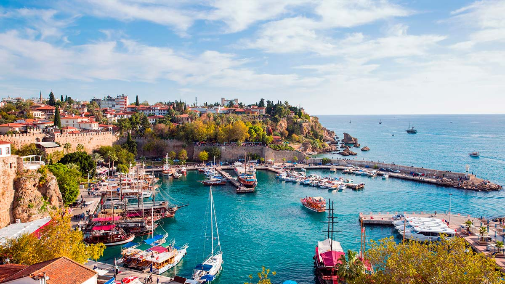
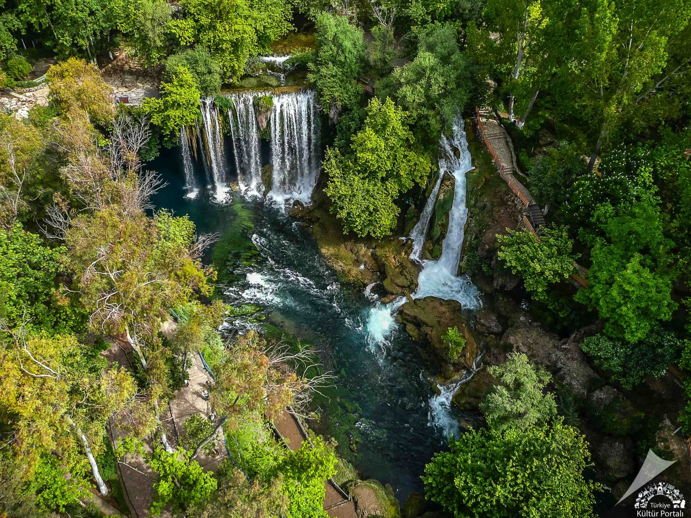
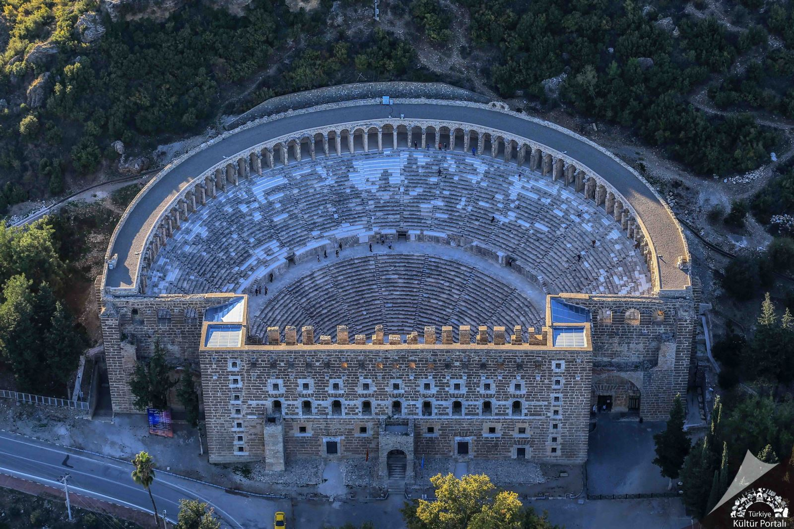
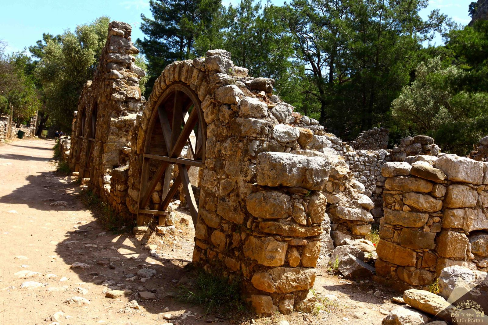

Antalya, Türkiye'nin güney sahilinde yer alan, Akdeniz'e kıyısı olan önemli bir turistik şehir ve aynı zamanda Antalya ilinin merkezidir. Şehir, hem tarihi zenginlikleri hem de doğal güzellikleriyle ünlüdür. Antalya, Türkiye'nin en popüler turistik destinasyonlarından biridir ve her yıl milyonlarca turist çekmektedir. Antalya'nın 2024 yılı itibarıyla nüfusu yaklaşık 2.6 milyon civarındadır. Bu rakam, şehrin turizmle birlikte göç alması nedeniyle her yıl artmaktadır.
Antalya'nın Tarihçesi
Antalya, antik dönemde "Attaleia" adıyla biliniyordu. Şehir, MÖ 2. yüzyılda Bergama Kralı II. Eumenes tarafından kurulmuş ve Roma İmparatorluğu döneminde önem kazanmıştır. Bizans, Selçuklu ve Osmanlı dönemlerine ait birçok yapıyı da içerisinde barındıran şehir, her dönemde farklı kültürlerin izlerini taşır. Antalya, 1391 yılında Osmanlı topraklarına katılmıştır.
Antalya'nın Coğrafyası
Antalya, Türkiye'nin güney sahilinde yer alan ve Akdeniz ikliminin etkisi altında olan bir şehirdir. Şehir, dağlar, deniz ve tarihi kalıntılarla dolu bir coğrafyaya sahiptir. Antalya'nın en bilinen doğal güzelliklerinden biri olan Konyaaltı Plajı, mavi bayraklı plajları ve temiz denizi ile ünlüdür. Ayrıca, Toros Dağları'nın eteklerinde yer alan şehir, doğa yürüyüşleri ve dağcılık gibi aktiviteler için de ideal bir yerdir.
İklim
Antalya, Akdeniz iklimi etkisi altındadır. Yazlar sıcak ve kurak, kışlar ise ılımandır. Yazın hava sıcaklıkları 30°C'nin üzerine çıkabilirken, kış aylarında ise sıcaklık 10°C civarlarında seyreder. Bu nedenle Antalya, yıl boyunca pek çok turist çeker.
Gezilecek Yerler
Antalya, zengin tarihi mirası ve doğal güzellikleriyle ziyaretçilerine eşsiz bir deneyim sunar. Şehrin kalbinde yer alan Kaleiçi, Roma'dan Osmanlı'ya uzanan çok katmanlı geçmişi, dar sokakları ve özgün mimarisiyle tarihin içinde bir yolculuk imkânı sunar. Doğa tutkunları için Düden Şelalesi, kaynağını yer altı nehirlerinden alan ve etkileyici bir görsel şölen sunan benzersiz bir duraktır. Antik dönemin ihtişamını hissetmek isteyenler için Aspendos Antik Tiyatrosu, mimari zarafeti ve tarihi dokusuyla öne çıkar. Son olarak, hem doğa hem tarih severlerin ilgisini çeken Olympos, mitolojik hikâyeleri, antik kalıntıları, sahili ve Yanartaş’ın gizemli alevleriyle ziyaretçilerine büyüleyici bir atmosfer sunar. Antalya’nın bu dört önemli noktası, şehrin kültürel ve doğal zenginliğini en iyi yansıtan duraklardır.

Kaleiçi
Antalya, II. Attalos tarafından kurulmuş ve "Attalos Yurdu" anlamına gelir. Bergama Krallığı'nın çöküşünden sonra bir süre bağımsız kalan kent, korsanların eline geçmiş ve M.Ö. 77'de Roma'ya katılmıştır. Hadrianus'un ziyareti şehrin gelişimine katkı sağlamıştır. Bizans döneminde piskoposluk merkezi olan kent, Türklerin fethinden sonra daha da büyümüştür. Modern Antalya antik şehrin üzerine kurulduğundan, antik kalıntılar azdır; liman mendireği, Hadrian Kapısı ve Hıdırlık Kulesi bunlar arasındadır.
Kaleiçi, at nalı şeklinde surlarla çevrili olup Roma, Bizans, Selçuklu ve Osmanlı dönemlerine ait izler taşır. 1972'de SİT alanı ilan edilmiş, 1984'te Turizm Oscarı kazanmıştır. Dar sokakları, geleneksel evleri ve tarihi dokusuyla Antalya'nın geçmiş yaşam tarzını ve mimarisini yansıtır. Eski liman çevresinde yer alan Korykos adlı korsan limanından itibaren kesintisiz yerleşim süregelmiştir. Kaleiçi, günümüzde özgün yapısını koruyarak turistik ve kültürel bir merkez haline gelmiştir.

Düden Şelalesi
Düden Şelalesi, Antalya'nın Kepez ilçesi, Varsak Mahallesi sınırlarında yer almaktadır. Şelale, farklı kaynaklarda İskender Şelalesi, Yukarı Düden Şelalesi veya halk arasında Düdenbaşı Şelalesi olarak da anılır.
Şelalenin kaynağını, eski Antalya-Burdur yolu üzerinde, Kırkgözler ve Pınarbaşı’ndaki bol suya sahip iki büyük karstik kaynak oluşturur. Bu sular kısa bir akıştan sonra Bıyıklı Düdeni'nde kaybolur, yer altında yaklaşık 14 kilometre yol aldıktan sonra Varsak Çöküntüsü'nden tekrar yüzeye çıkar, ardından yeniden yer altına batar. Varsak’ta kaybolan su, yaklaşık iki kilometrelik yer altı yolculuğundan sonra Düdenbaşı'nda yeniden yeryüzüne çıkar.
Düdenbaşı Şelalesi'nde, yüzey akışı olmasa bile saniyede en az 10 metreküp su çıkar; ortalama debi saniyede 15-16 metreküp, en yüksek debi ise 94 metreküptür. Şelaleden akan suyun bir kısmı Kepez Hidroelektrik Santralı’ndan gelir. Düden Çayı, Düdenbaşı'ndan sonra Koyunlar Regülatörü'nde iki ana kanala ayrılır ve yaklaşık 9 kilometre ilerledikten sonra, Antalya'nın doğusunda 40 metre yüksekliğindeki traverten bir eşikten şelale yaparak Akdeniz’e dökülür.

Aspendos Antik Tiyatrosu
Aspendos Antik Kenti, Anadolu ve Akdeniz dünyasının en iyi korunmuş Roma dönemi tiyatrosuna sahiptir. Şehir, Köprüçay (antik Eurymedon) Nehri yakınlarında verimli topraklarda kurulmuş, gelişimini de bu avantajına borçlu olmuştur. Bugün özellikle tiyatrosu ve su kemerleriyle tanınır.
Tarih boyunca önemli olaylara sahne olan Aspendos, MÖ 467 yılında Eurymedon Savaşı'na tanıklık etmiş ve Büyük İskender döneminde kısa bir direnişin ardından teslim olmuştur. Kent, en parlak dönemini Roma İmparatorluğu zamanında yaşamış, bu dönemde tiyatro, agora, bazilika, anıtsal tak ve Helenistik tapınak gibi yapılar inşa edilmiştir.
Tiyatronun yanı sıra su kemerleri, antik su yolunun günümüze ulaşan en iyi örneklerindendir. 2. ve 3. yüzyıllarda geliştirilen bu sistem, suyun düzenli taşınmasını sağlamıştır.
Aspendos’un ekonomik refahı, Kapria Gölü'nden elde edilen tuz, bağcılık, şarapçılık, zeytin ve tahıl ürünleri gibi tarımsal faaliyetlere dayanıyordu. Şehir ayrıca, ünlü atlarıyla da Akdeniz ve Yakındoğu'da ün kazanmıştı.
Aspendos Tiyatrosu ve Su Kemerleri, 2015 yılından bu yana UNESCO Dünya Mirası Geçici Listesi'nde yer almaktadır.

Olympos
Olympos, Antalya'nın güney sahillerinde, Tahtalı Dağı'nın eteklerinde, Beydağları-Olympos Milli Parkı sınırları içinde yer alan antik bir liman kentidir. Kuruluş tarihi kesin bilinmemekle birlikte, İÖ 167–168 yıllarında Likya Birliği’nde üç oy hakkı olan altı şehirden biri olarak anılmıştır. Kalıntılar, doğudan batıya hızla akan bir nehrin her iki yakasına yayılmıştır. Nehir, antik dönemde kanal içine alınarak iki iskele oluşturulmuş ve köprüyle bağlanmıştır; günümüzde köprünün bir ayağı ayakta durmaktadır. Kentin önemli yapıları arasında Roma İmparatoru Marcus Aurelius adına yapılan tapınak kapısı ve kaptan Eudomus'un gemi kabartmalı lahdi bulunmaktadır.
Olympos'un doğusunda, caretta carettaların yumurtladığı doğal kumsalları ve zengin bitki örtüsüyle ünlü Çıralı yer alır. Yakınlardaki Çakaltepe'de ise metan gazı nedeniyle sürekli yanan Yanartaş bulunur. Bu doğa olayı, Khimaira efsanesiyle ilişkilendirilmiş ve bölge zamanla Hephaistos kült merkezi hâline gelmiştir. Roma ve Bizans dönemlerinde dini önem taşıyan bölgede fresklerle süslü bir Bizans kilisesi ve kutsal yol kalıntıları da görülebilir.